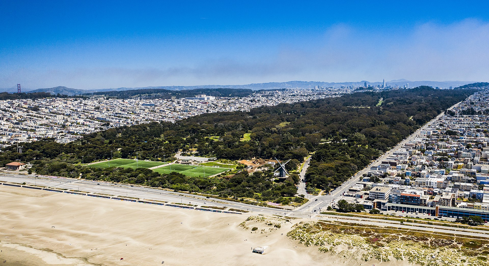

Golden Gate Park is a sprawling urban oasis located in San Francisco, California. Spanning over 1,000 acres, it offers a wide array of attractions and activities, making it a beloved destination for locals and tourists alike.
Explore the park's lush green spaces, gardens, and picturesque lakes. Stroll through the enchanting Japanese Tea Garden, where you can admire traditional Japanese architecture, beautiful plants, and serene koi ponds. Visit the Shakespeare Garden, a hidden gem filled with flowers and plants mentioned in Shakespeare's plays. Discover the Conservatory of Flowers, a Victorian-style greenhouse that showcases a diverse collection of exotic plants and flowers.
Golden Gate Park is home to several world-class museums. The de Young Museum showcases an impressive collection of American art from the 17th through the 21st centuries, as well as art from Africa, Oceania, and the Americas. The California Academy of Sciences combines a natural history museum, aquarium, planetarium, and a living roof, creating a unique and educational experience for visitors of all ages. The Academy's Steinhart Aquarium features an extensive array of marine life, including a living coral reef exhibit.
The park also offers recreational activities for outdoor enthusiasts. Rent a paddleboat or rowboat and glide across Stow Lake, surrounded by scenic views and iconic landmarks. Play a round of disc golf at the Marx Meadow course or enjoy a leisurely bike ride along the park's many trails. You can also join a yoga class, go rollerblading, or have a picnic in one of the park's designated areas.
Throughout the year, Golden Gate Park hosts various events and festivals, including concerts, art exhibits, and cultural celebrations. The most famous event is the annual Outside Lands Music and Arts Festival, which brings together renowned musicians, artists, and food vendors for a memorable weekend in the park.
Golden Gate Park is a true urban oasis, offering a retreat from the bustling city and a chance to connect with nature, art, and culture. Whether you're seeking tranquility, recreational activities, or educational experiences, this iconic park has something for everyone to enjoy.